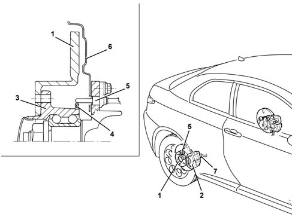

3310B REAR DISC BRAKES
- Path
- Descriptions > 33 BRAKING SYSTEM > 3310 DISC BRAKES > 3310B REAR DISC BRAKES
- Kind
- system description
- Applies to
- all engines; all production periods
- Interactive page
- https://sloeber94.github.io/elrnDB-aGt/en/#/125000346
Applies to: all engines; all production periods
CONSTRUCTION FEATURES
On all versions, the rear wheels are fitted with a brake system with solid discs and LUCAS floating aluminium calipers with automatic play take-up.
The brake caliper mechanism is operated mechanically by means of the handbrake lever [
Characteristic of working principle 3380 HANDBRAKE
].
The hub outer race is fitted with a multipolar magnetic ring that indicates wheel movements to the active ABS sensor
Characteristic of working principle 3340 ANTI-LOCK BRAKE SYSTEM (ABS)
secured to the suspension arm.

1 - Brake disc
2 - Brake caliper
3 - Hub outer race
4 - Multi-pole magnetic ring
5 - ABS active sensor
6 - Guard
7 - Handbrake link anchorage